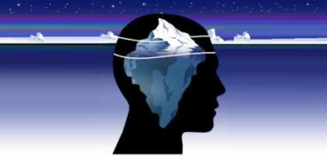
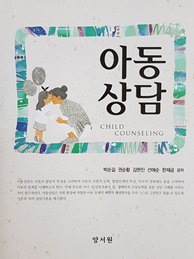

자아와 방어기제
인간에게는 불안이나 두려움의 위협에서 자신을 보호하거나 해소하기 위하여 신호를 보내는 요소가 존재한다. 방어기제(Defense Mechanism)는 인간의 마음속에서 서로 반대되는 심리로 개인마다 발달 수준과 불안 정도에 따라 다르게 나타난다. 프로이드는 논문 〈방어의 신경정신학〉에서 억압, 부인, 투사를 소개했으며, 안나 프로이드는 1936년 ‘자아와 방어기제’를 통하여 다양한 방어기제를 소개하였다.

1) 억압(repression)
억압은 고통, 충격(가정폭력, 학대), 두려움, 충동， 상상 등을 무의식 속으로 눌러 두는 것이다. 억압은 무의식적 충동을 완전히 차단함으로써 의식할 수 없도록 한다. 5세 이전에 발생한 성적 학대와 같은 외상경험은 억압을 통해서 무의식에 저장되며 외상 기억의 과도한 억압은 히스테리 반응을 유발하기도 한다.
2) 합리화(rationalization)
합리화는 무의식적 욕망， 충동， 동기 등 불쾌한 상황을 그럴듯한 구실을 붙여 불안을 회피하는 것이다. 이솝우화 ‘여우와 신포도’ 처럼 자아를 보호하려고 설명하지만 실제의 무의식적 욕망이나 동기를 지적하면 화를 낸다.
3) 동일시 또는 동일화(identification)
동일시는 중요한 인물들의 태도와 행동을 자기화하는 것이다. 의식의 기능을 강화하고자 할 때 대상이 가지고 있는 신념, 가치 등을 자신의 것으로 만들고자 하는 소망이다. 즉, 상대방의 입장이 되어서 상대의 생각이나 감정을 느끼는 공감능력으로 초자아를 형성시키는데 유익하다.
4) 투사(projection)
투사는 용납할 수 없는 자신의 감정이나 욕구를 다른 사람의 것으로 돌리는 것이다. 자신이 받아들이기 어려운 충동이나 태도, 공격성, 욕구 등을 다른 사람이나 환경 탓으로 비난함으로써 자신을 보호한다. 즉, 자신의 무의식 속에 숨어 있는 적개심을 상대방에게 투사하여 그가 자신을 미워한다고 인식하여 불안을 감소시킨다.
5) 부인(denial)
부인은 자신의 감각, 사고, 감정을 심하게 왜곡하거나 인식하지 못함으로써 고통스러운 현실을 부정하는 것이다. 가족의 갑작스러운 죽음, 불치병 등 받아들일 수 없는 상황 자체를 부정해 버림으로써 불안을 피하는 가장 원시적인 방어이다.
6) 반동형성(reaction formation)
반동형성은 사회적으로 용인이 될 수 없는 충동을 막기 위해 완전히 반대되는 행동으로 불안을 회피하는 것이다. 즉, 분노와 적개심이 있는 대상에게 자신이 느끼는 불안을 해소하기 위해 겉으로는 매우 친절하고 다정한 말이나 행동을 한다.
7) 퇴행(regression)
퇴행은 현재의 불안이나 좌절감, 책임감을 피하기 위하여 이전의 발달단계로 되돌아가는 것이다. 심리적 불안하거나 스트레스를 심하게 받을 때 자신의 요구를 관철시키기 위하여 미성숙하고 부적절한 행동을 나타낸다.
8) 승화(sublimation)
승화는 성적이나 공격적인 욕구를 사회적으로 바람직한 행동으로 변환시키는 것이다. 자아로 하여금 충동의 목적이나 대상을 운동이나 예술로 표현하기 때문에 건전하고 건설적인 방법으로 다루는 기제이다.
2021.11.27 - [분류 전체보기] - 손가락 빨기, 손톱 물어 뜯는 아이의 문제-공격성, 심리적 불안
손가락 빨기, 손톱 물어 뜯는 아이의 문제-공격성, 심리적 불안
손가락 빨기, 손톱 물어 뜯는 행동 의의 및 특성 아이가 손가락을 빠는 행동은 출생 후 3~4개월에 나타나며, 7개월이 되면 강해지기 시작하여 18개월경에 가장 심해지고 3세경이 되면 약화된다. 6
think-sis.tistory.com
출처: 박순길 외 공저(2017). 아동상담 3장 정신분석 상담의 주요 이론 중에서

2021.11.27 - [분류 전체보기] - 프로이드의 성격 구조 3가지 - 원초아, 자아, 초자아
프로이드의 성격 구조 3가지 - 원초아, 자아, 초자아
프로이드의 성격의 구조 3가지 프로이드의 저서 ‘자아와 원초아(The Ego and Id)’에서 인간의 성격은 원초아(id)， 자아(ego), 초자아(superego)에 의해 작동된다고 주장하였다. 이 3가지 중 원초아(id)
think-sis.tistory.com